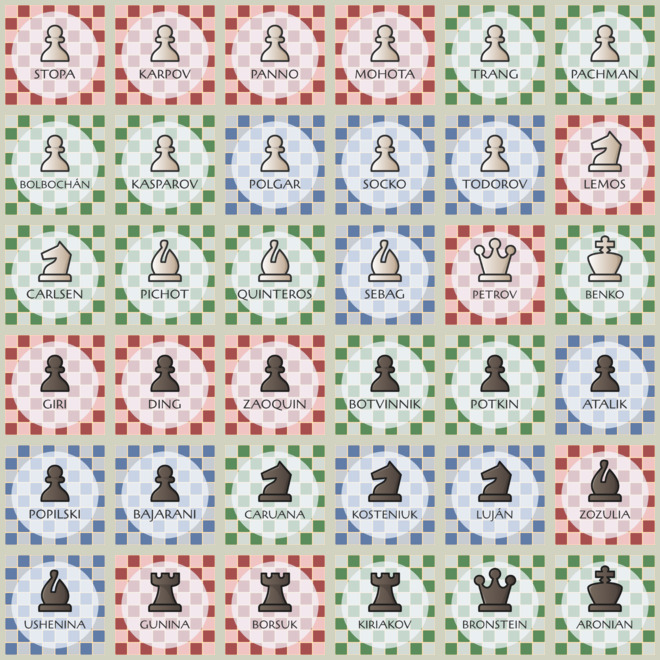
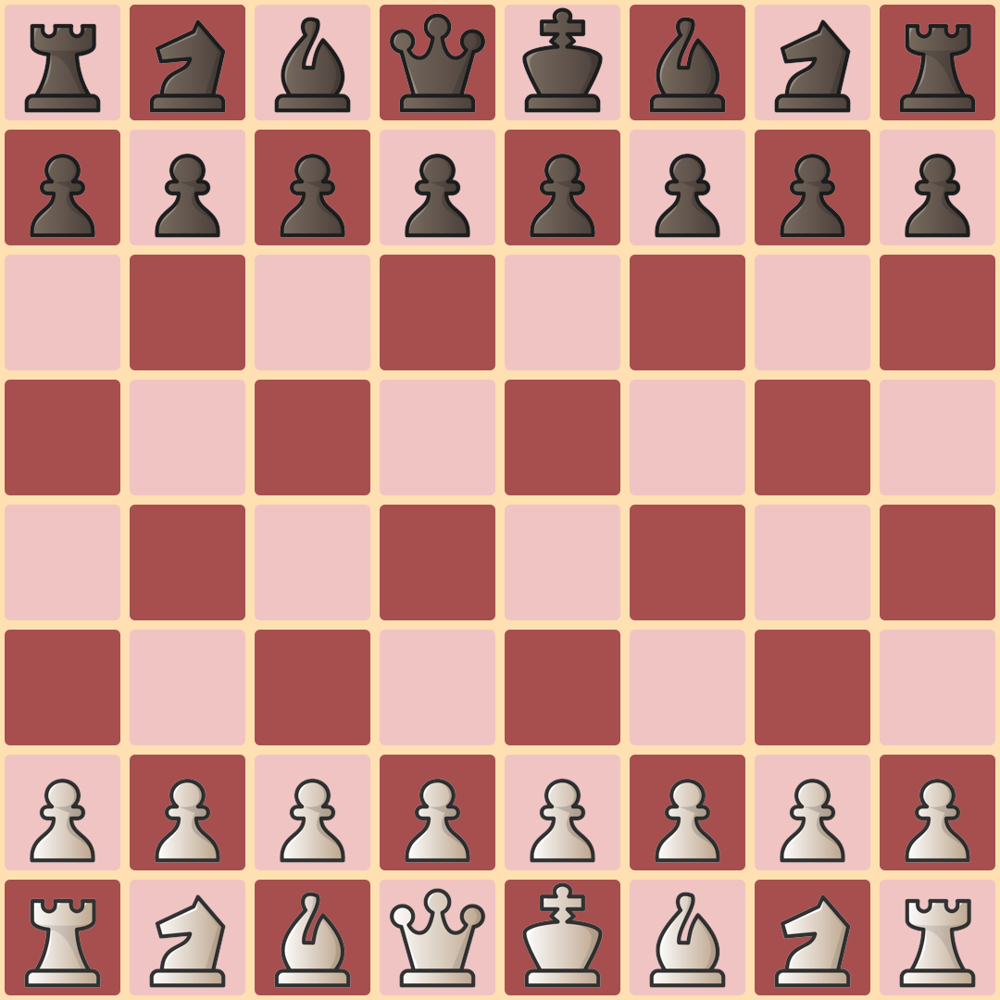
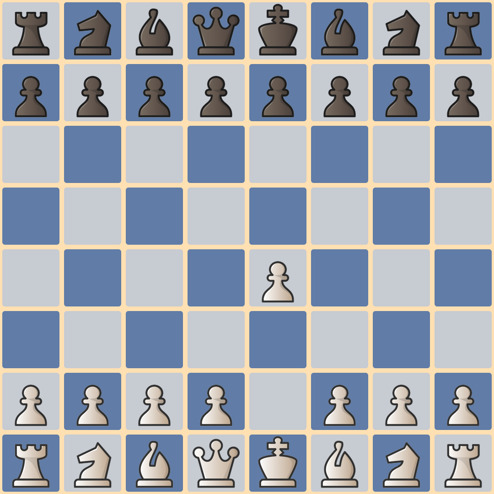
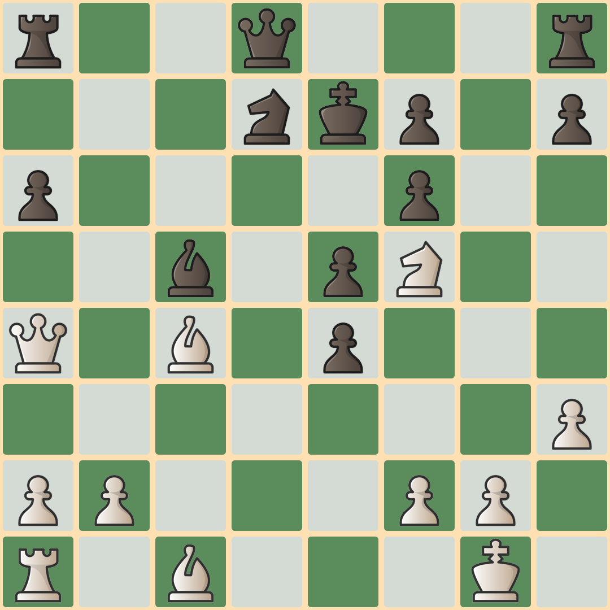
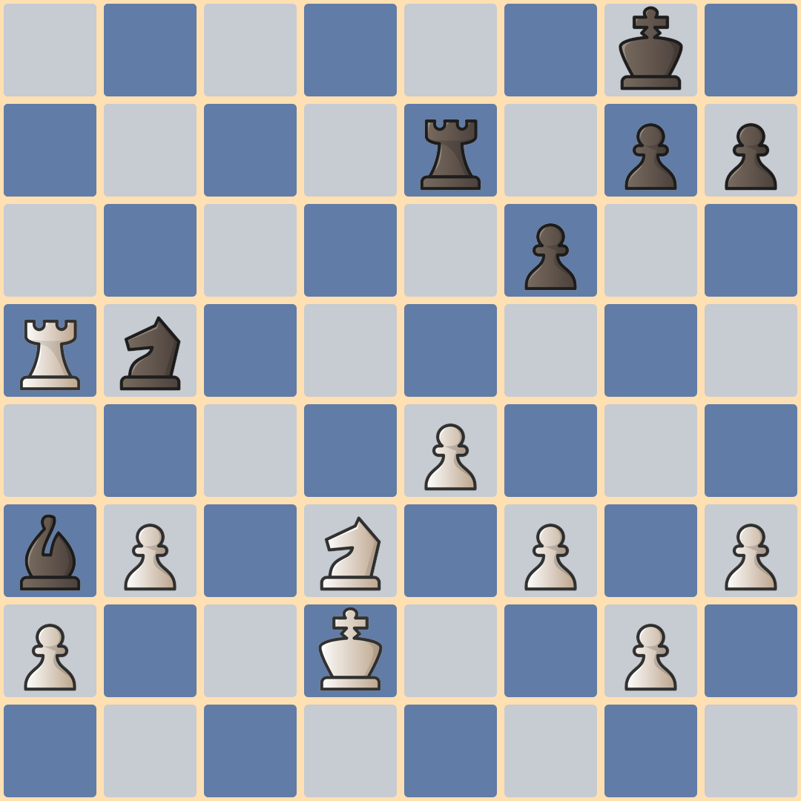

ja que lu dios
introducción
Danza de nombres es el primer jaqueludio. Un preludio estocástico basado en partidas de ajedrez para auditorio de intérpretes. Un pequeño homenaje a las personas que mejor han jugado al ajedrez durante su larga historia. Un juego pensado para un grupo de al menos 32 personas, aunque idealmente deberían ser más de 64.
la partida
La única sección de la pieza es condicionada por una partida de ajedrez. Todos los jugadores tienen que poder ver el tablero que reproduce la partida elegida. La elección de la partida es completamente libre. Recomiendo elegir lindas partidas, al menos interesantes, aunque las malas quizás suenen igual.
el tiempo
Una Danza de nombres dura aproximadamente 90 segundos. La partida elegida se descompone en entre 40 y 50 posiciones del tablero. Cada posición debe mantenerse durante unos 2 segundos. Así, si la partida tiene 24 jugadas puede haber una posición del tablero para cada movimiento pero si tiene 70 jugadas habrá que comprimirla.
las cartas
Antes de comenzar cada jugador necesita una carta. Cada carta tiene un nombre y una pieza de ajedrez.
tu carta
Aquí la computadora eligió al azar una carta para vos. ¿No creés que haya sido al azar? Probá volver a cargar la página.
la melodía
Cada jugador compone una breve melodía usando los sonidos del nombre de su carta. No vale usar sonidos que no estén en el nombre de la carta. La melodía no puede durar más de 4 segundos.
Carlsen: carl-sen-sen
Polgar: olé-olé pol-gar
Kasparov: kas-pa-pa-kas
silencio
Al ver el tablero inicial de la partida, el grupo de jugadores hace silencio. En ese momento cada jugador elige la pieza a seguir, respetando el tipo de pieza de su carta (un peón blanco, un alfil negro, etc). La seguirá durante toda la partida.
largada
Ante el primer movimiento, todos los jugadores comienzan a cantar su melodía, con intensidad media (ni muy fuerte ni muy despacio). La repiten sin parar mientras dure la partida. Pueden variar la melodía si se aburren.
cambios
Puede ocurrir que la pieza que un jugador está siguiendo sea capturada. En ese caso, el jugador seguirá cantando pero con vos de fantasma (susurrando).
Además, cada vez que su pieza se mueva, el jugador deberá aplaudir una vez (hacer un ruido chocando ambas manos) sin parar de cantar.
El preludio finaliza con la imagen de un tablero vacío. En ese momento, los jugadores dejan de cantar.
Pueden aplaudir.
evaluación
Mientras sigue su pieza por el tablero, el jugador podrá evaluar la posición de la partida. Si considera que su color tiene ventaja cantará más fuerte. Si intuye que su color está en desventaja cantará más suave. Cuanto mayor sea la ventaja (o desventaja) mayor deberá ser el cambio de intensidad.
Aquellos intérpretes que se tomen muy en serio su papel, podrán estudiar la partida elegida con ayuda de algún motor de ajedrez. Recomiendo usar un estudio de Lichess.
estreno
Como no podía ser de otra manera, las primeras versiones de Danza de nombres sonaron en el 13er Festival del ingenio en el Centro Cultural de la Ciencia.
Podés mirar el video que inmortaliza ese momento en el canal del festival. Incluye la explicación del juego y los brevísimos ensayos previos. Todo transcurrió en 15 minutos. La música la podés escuchar acá mismo.
Fischer vs. Najdorf
En 1962, en las Olimpíadas de Varna, Bobby Fischer destrozó a Miguel Najdorf. Acá podés escuchar la Danza de nombres basada en esta partida por el público del Festival del ingenio.
Karpov vs. Polgar
En 2002, Judith Polgar venció a Anatoly Karpov en una partida larga y peleadísima. El público del Festival del ingenio la hizo sonar así (grabó Micaela Montes).
materiales
Si querés llevar a cabo una versión de Danza de nombres podés usar el pequeño programa que escribí para transformar una partida en formato pgn en una serie de imágenes png. Está escrito en Python y usa la librería python-chess. Lo encontrás en gitlab.
Si querés imprimir las cartas podés descargarlas en A3 desde acá. Si no querés imprimir nada, simplemente pedile a los jugadores busquen una carta virtual usando este enlace.
escribí
Si necesitás ayuda para hacer sonar Danza de nombres o querés hacerme llegar cualquier comentario, podés contactarme por mail o buscarme en telegram o mastodon.
Puedo recomendar partidas, ayudar con el análisis de la que hayas elegido e incluso mandarte las imágenes con las posiciones para guiar una interpretación. Si hacés una versión avisame que quiero escuchar.